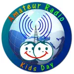
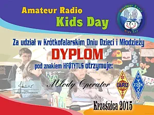

--------- Informacje ---------
---17.04.2023--------
Aktualizacja strony -
rezygnacja z php.
---17.04.2017--------
Zmiana serwera i adresu.
---17.04.2015--------
Wielka rozbudowa strony.
---13.07.2009--------
Zmiana wyglądu strony - optymalizacja.
---06.02.2004--------
Zalążek strony.
{kind=link}
2024 Amateur Radio Kids Day w Krześnicy
Amateur Radio Kids Day czyli Krótkofalarski Dzień Dzieci i Młodzieży obchodzony jest
zawsze dwukrotnie w ciągu roku. 14 Czerwca 2024 pod znakiem naszego klubu SP1PNW Weronika
SQ1KSL i Sławek SQ1KSM zorganizowali pracę stacji SP1PNW w świetlicy w miejscowości
Krześnica (~10km od Dębna). Pandemia i inne trudności spowodowały dużą przerwę od
ostatniego tego typu wydarzenia. W tym dniu wszystkie dzieci mogły przeprowadzić łączności
w paśmie 2 i 40 m.
Na pomoc przyjechał Sebastian SP3W wraz z żoną i synem. Rozwiesiliśmy anteną FD4 i
podłączyliśmy ją do TRX FT450, ale niestety propagacja nas nie rozpieszczała. Weronika
opowiedziała o naszym hobby, Sebastian o pracy terenowej oraz pomagał młodzierzy w pierszych
łącznościach. Odważni, którzy przeprowadzili łączność otrzymali pamiątkowe dyplomy.
Gratulujemy dzieciom ich pierwszych łączności na pasmach KF!
Wszystkim naszym korespondentom serdecznie dziękujemy za okazane ciepło i cierpliwość.
{kind=link}
{kind=link}
{kind=link}
{kind=link}
Sławek SQ1KSM (15.06.2024)
2016 Amateur Radio Kids Day w Krześnicy

Już po raz trzeci w Krześnicy zorganizowaliśmy (Weronika SQ1KSL - opiekun Świetlicy i
piszący te słowa Sławek SQ1KSM) Krótkofalarski Dzień Dzieci i Młodzieży. W tym roku pod
patronatem klubu SP1PNW młodzież i dzieci mogły z tymczasowej stacji próbować swoich sił w
łącznościach krótkofalarskich. Pracowaliśmy w paśmie 80 m (okolice 3.7MHz), 40m oraz 2m na
częstotliwość 145.550 MHz. Wszystkim kolegom krótkofalowcom dziękujemy za wyrozumiałość i
cierpliwość, którą musieli wykazać by ułatwić im pierwsze kontakty radiowe na pasmach.
Dzień dziecka rozpoczęliśmy około godziny 14:00. Kilka minut zajęło mi i Markowi (SP3GVX)
rozłożenie anteny. Z dachu świetlicy rozłożyliśmy ramiona anteny FD4, niestety zabrakło
już czasu na większą antenę UKF, i na tym paśmie rozmawialiśmy tylko lokalnie z anten TRX
przenośnych. Dzieci już obserwowały nas od początku pomimo, że oficjalne rozpoczęcie było
2 godziny później, tak sobie zaplanowaliśmy, ale jak odmówić zniecierpliwionym
dzieciom.... no i praktycznie zaczęliśmy godzinę wcześniej - ledwo udało się rozłożyć
sprzęt. Do pracy wykorzystaliśmy prywatny sprzęt z naszego QTH w Krześnicy. Rozstawiliśmy
jako główne stanowisko FT-450 ze skrzynką i zasilaczem podłączonych do wspomnianej anteny.
Prawie wszystko nam sprzyjało, jedynie propagacja była niełaskawa. Taką samą sytuację
mieliśmy 2 lata temu, w poprzednim roku mieliśmy więcej szczęścia. Pomimo tego
zainteresowanie radiem było wysokie. Nie wszyscy odważyli się chwycić mikrofon, ale te
które złapały nie chciały się oderwać...
{kind=link}
Później rozstawiłem drugą stację QRPP (0.25W) nieopodal w parku i zrobiłem pokazową
łączność ze swojego prywatnego znaku z dziećmi w świetlicy. Radości podczas wszystkich
łączności było wiele, dla nich to zawsze jest jakieś przeżycie, trema którą trzeba
przełamać by porozmawiać z dorosłym operatorem nie koniecznie mieszkającym w Polsce. Ze
smutkiem piszę, ale niestety staje się to regułą że to dziewczyny łapią za mikrofony, a
chłopaki ukradkiem patrzą i trzeba ich mocno namawiać...
Dziękuję również wszystkim którzy nas odwiedzili w tym dniu: Markowi SP3GVX i Tadeuszowi
SP1WWS i nas wspierali (SP3SBY, SQ1NXN, SQ1NXZ, SP1FMW).
{kind=link}
{kind=link}
{kind=link}
{kind=link}
Sławek SQ1KSM (21.06.2016)
2015 Amateur Radio Kids Day w Krześnicy
{kind=link}
Od 7.06.2015 do 30.06.2015 trwa krótkofalarska akcja dyplomowa „Tytus, Romek i A’Tomek”,
której podstawowym celem jest uczczenie urodzin Henryka Jerzego Chmielewskiego, polskiego
grafika, rysownika, znanego jako Papcio Chmiel, twórcy serii komiksu pt. „Tytus, Romek i
A'Tomek”, ur. 7 czerwca 1923 roku. Akcja "Tytus Romek i A'Tomek" łączy się pięknie z
Krótkofalarskim Dniem Dziecka, który miał miejsce 21 czerwca. Z tej właśnie okazji w
świetlicy w Krześnicy rozlokowano stację HF0TYTUS. Dzięki pomocy kolegów biorących udział
w akcji rozłożono anteny, zainstalowano radiostację i po krótkim teoretycznym wstępie,
swoich sił w przeprowadzeniu łączności drogą radiową mogły spróbować dzieci. Okazały się
być bardzo pilnymi uczniami i przy niewielkiej pomocy, pięknie i fachowo prowadziły
łączności, a korespondenci chwalili je za odwagę i staranność życząc powodzenia w
rozwijaniu krótkofalarskiej pasji.
W tym roku przy radiostacji prym wiodły dziewczyny. Szczególne gratulacje należą się Zuzi,
Nikoli, Angelice, Roksanie, Martynce, Oli i Darii. Chłopcy pilnie obserwowali, mając więc
niezłe przygotowanie teoretyczne, w kolejnej akcji to oni będą z pewnością przy
mikrofonie.
Ogółem udało się dziewczynom przeprowadzić 150 łączności, głównie ze stacjami z całej
Polski, ale na wywołanie odpowiedziało również wiele stacji z Niemiec, oraz stacje z
Węgier, Czech, Włoch, Danii czy Estonii. Na pamiątkę dziewczyny otrzymają dyplomy, oraz
karty QSL potwierdzające przeprowadzone łączności.
Był to drugi Krótkofalarski Dzień Dziecka w świetlicy w Krześnicy, z pewnością nie
ostatni. Krótkofalarstwo to nie tylko frajda z rozmowy z osobą po drugiej stronie
mikrofonu, ale także pobudzająca ciekawość świata pasja zachęcająca do zaglądania
na mapę świata, nauki języków, oraz aktywności na wielu innych polach, bo krótkofalarstwo
to bardzo szeroka dziedzina.
{kind=link}
{kind=link}
{kind=link}
{kind=link}
Weronika SQ1KSL / HF1ROMEK (21.06.2015)
2014 Amateur Radio Kids Day w Krześnicy
Amateur Radio Kids Day czyli Krótkofalarski Dzień Dzieci i Młodzieży obchodzony jest
zawsze dwukrotnie w ciągu roku. 21 Czerwca 2014 pod znakiem naszego klubu SP1PNW
urządziliśmy stację w świetlicy w miejscowości Krześnica (~10km od Dębna). W tym dniu
wszystkie dzieci mogły przeprowadzić łączności w paśmie 40 i 80m.
Gratulujemy: Angelice, Roksanie, Martynce, Zuzi, Piotrusiowi, Łukaszowi, Korneli i
Jakubowi ich pierwszych łączności na pasmach KF! Wszystkim naszym korespondentom
serdecznie dziękujemy za okazane ciepło i cierpliwość.
{kind=link}
{kind=link}
{kind=link}
{kind=link}
Sławek SQ1KSM (21.06.2014)
ZDJĘCIA CHWILOWO NIEDOSTĘPNE!